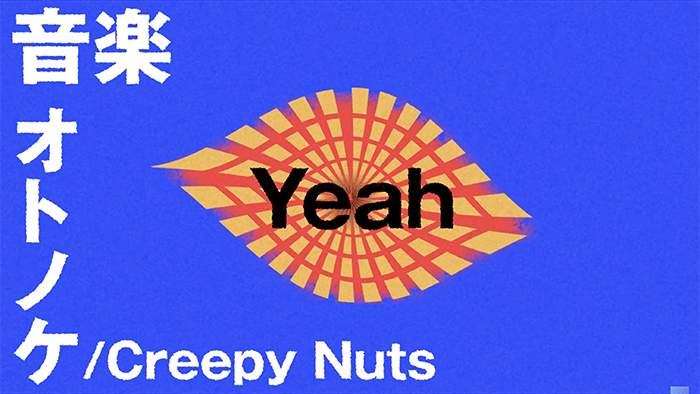
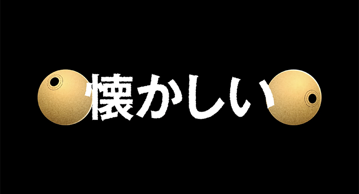
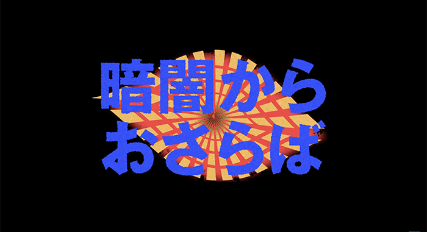

モーショングラフィックス「オトノケ」
Creepy Nutsさんの楽曲「オトノケ」の自主制作・自作PVです



クライアント
---
担当した作業
---
制作期間
2025.1.4 - 1.6
使用したソフトなど
Adobe AfterEffects
注意・工夫した点
アニメを全話見てから制作したので、途中途中で登場人物の要素（目）を入れるなどの工夫をしました。映像全体の雰囲気も、曲やアニメのイメージに合うように滑らかなモーションは控えめに制作しました。